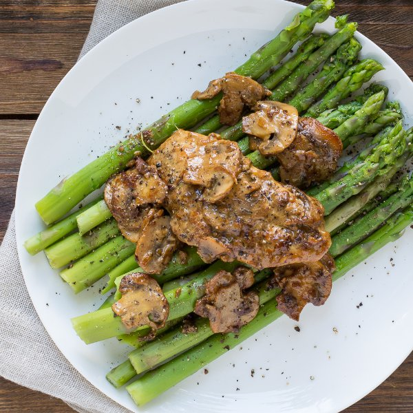

Skillet Dijon Chicken & Mushrooms with Asparagus

Total Time
40 min
Nutrition (per serving)
413.1 kcalCalories
32.9 gProtein
12.5 gCarbs
26.9 gFat
Full nutrition table
| Calories | 413.1 kcal |
| Total fat | 26.9 g |
| Saturated fat | 15.1 g |
| Trans fat | 0.9 g |
| Cholesterol | 154.5 mg |
| Sodium | 91 mg |
| Carbohydrates | 12.5 g |
| Fiber | 4.1 g |
| Sugars | 5.5 g |
| Protein | 32.9 g |
| Potassium | 957.8 mg |
| Calcium | 79.9 mg |
| Iron | 4.2 mg |
| Vitamin A | 1447.6 IU |
| Vitamin C | 10.8 mg |
| Vitamin D | 21.8 IU |
Cookware
Ingredients
- 2 small bunchesasparagus
- 1 lbchicken breasts, boneless skinless
- 8 fl ozchicken or vegetable broth
- 4 clovesgarlic
- 4 fl ozheavy whipping cream
- 2shallots
- ½ lbwhite mushrooms
- black pepper
- butter, unsalted
- Dijon mustard
- salt
- thyme, dried
Steps
- Fill a large pot about halfway with water, cover, and bring to a boil.
- Wash the asparagus and snap (or cut) off and discard the woody ends.2 bunches asparagus
- Once the water in the pot is boiling, add the asparagus and cover. Cook until bright green and tender, 3-4 minutes. Drain and thoroughly rinse under cold water to stop the cooking process. Set aside.
- Heat a skillet over medium heat.
- Slice the chicken in half horizontally to form thin fillets. Season both sides with salt and pepper.1 lb chicken breasts, boneless skinless
½ tsp salt
½ tsp black pepper - Add butter to the skillet and swirl to coat bottom. Add the chicken and cook until golden brown and cooked through, 3-4 minutes per side. Transfer to a plate.2 tbsp butter, unsalted
- Wash and slice the mushrooms. Peel and finely dice the shallots.½ lb white mushrooms
2 shallots - Once the chicken has been removed, add more butter to the skillet. Add the mushrooms and shallots. Cook, stirring occasionally, until the mushrooms are tender and any liquid has evaporated, 5-6 minutes.2 tbsp butter, unsalted
- Peel and mince the garlic.4 cloves garlic
- Add the garlic and thyme and cook until fragrant, 15-30 seconds.1 tsp thyme
- Add the broth and scrape up any browned bits from the bottom of the skillet. Stir in the cream and Dijon and season with salt and pepper.8 fl oz (1 cup) chicken or vegetable broth
4 fl oz (½ cup) heavy cream
2 tbsp Dijon mustard
½ tsp salt
½ tsp black pepper - Return the chicken to the skillet and bring to a boil. Simmer until the sauce is thickened, 4-5 minutes.
- Arrange asparagus on a plate and top with the chicken and mushrooms. Enjoy!